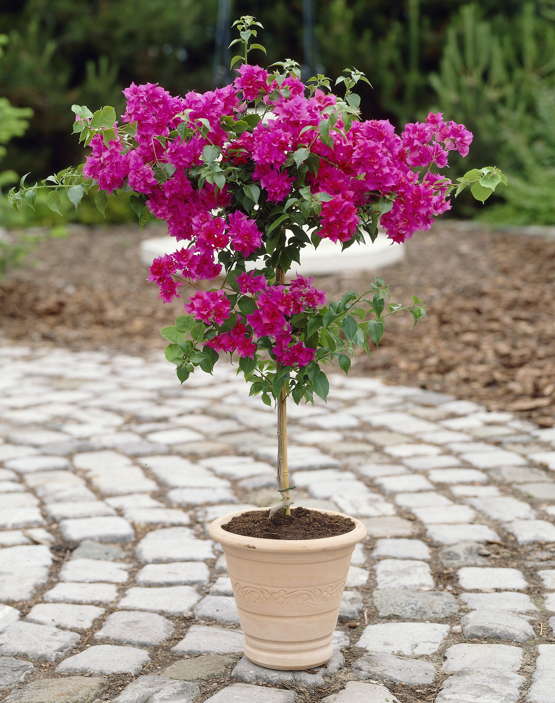

Scientific Name: Bougainvillea
Common Names: Paper Flower, Bougainvillea
Family: Nyctaginaceae
Native Region: South America
Plant Type: Thorny ornamental vine/shrub
Flower Colors: Pink, purple, red, orange, white, and yellow
Uses: Ornamental decoration, fencing, landscaping, garden beautification
Details: Bougainvillea is a bright and colorful flowering plant widely grown in gardens, parks, and along roadsides. It is famous for its vibrant paper-like bracts that surround the tiny white flowers.
This plant grows well in warm and sunny climates and requires very little maintenance once established. It can be grown as a shrub, climber, or hedge.
Bougainvillea is drought-tolerant and blooms heavily throughout the year in tropical and subtropical regions. Its thorny branches also make it useful as a natural protective fence.
Because of its attractive appearance and long-lasting blooms, Bougainvillea is one of the most popular ornamental plants used in landscaping and home decoration.